Diseño y construcción de la ropa
1. Trazamos las medias y diseñamos la camisa en la tela para luego recortarla.
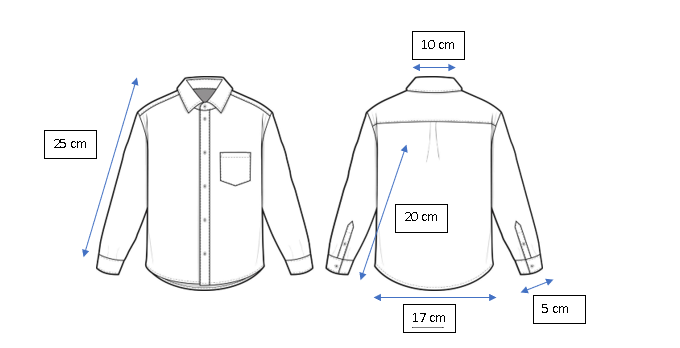
2. Trazamos las medias y diseñamos el pantalón en la tela para luego recortarla.
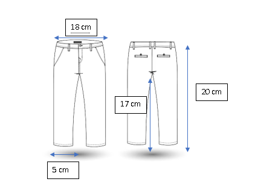
3. Colocamos y pegamos el pelo sintético en la cabeza de espuma Flex con silicona caliente.
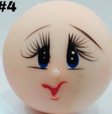
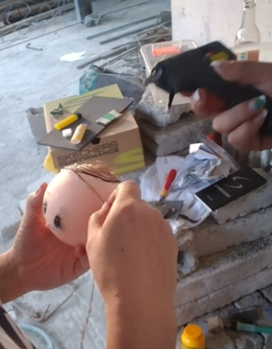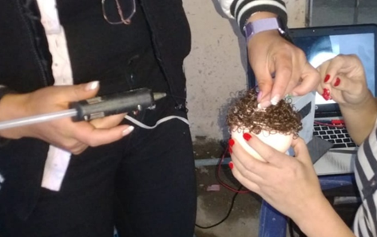
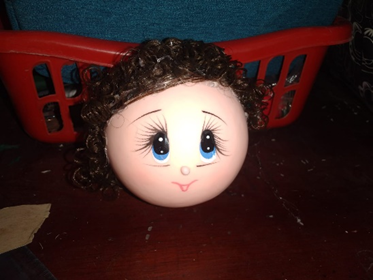
4. Se procede a realizar el cuello y los brazos de la maqueta, donde necesitaremos recortar pedazos del cartón cartulina para darle forma de cilindro.
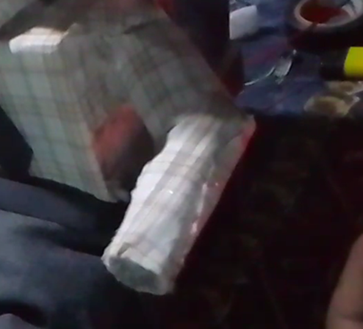
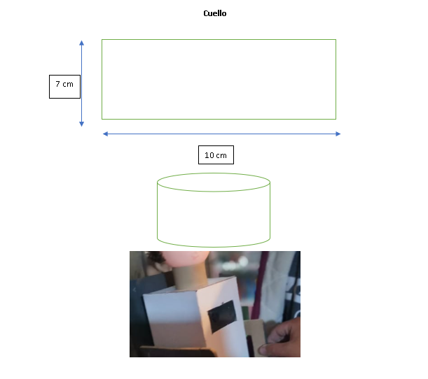
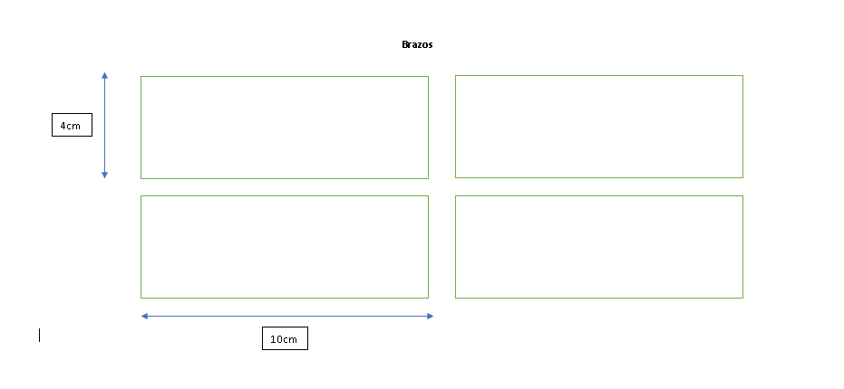
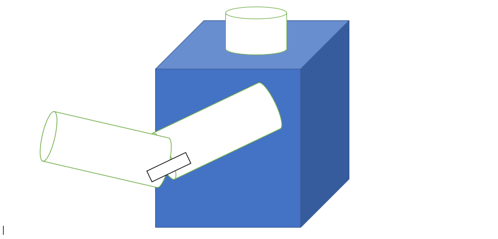
5. Realizamos la costura de la camiseta y los pantanos para colocarlos sobre la maqueta. Los pantalones los rellenamos con la tela sobrante para pegarlos con silicona en el la silla con resto del cuerpo de la maqueta.
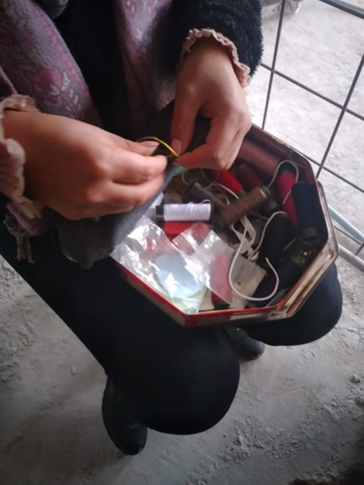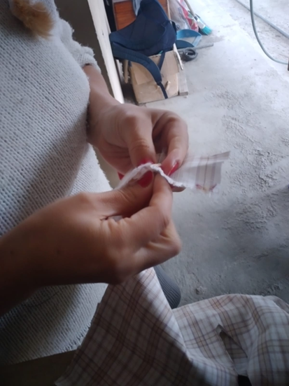
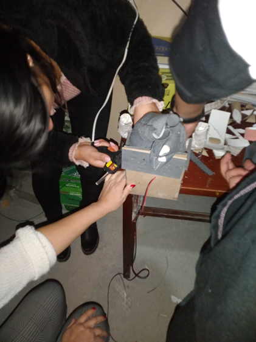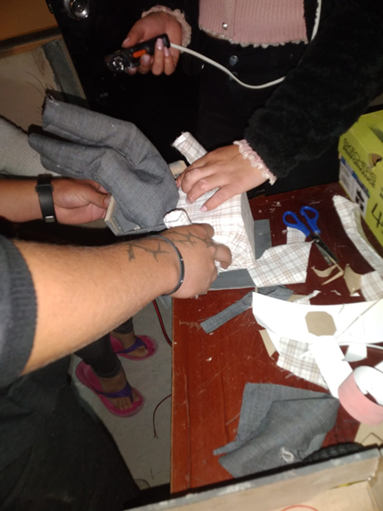
6. Diseñamos y recortamos los lentes con la ayuda de la cartulina de color negro.
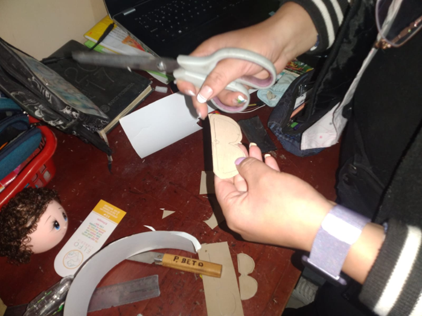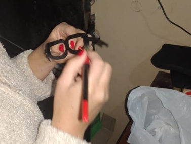